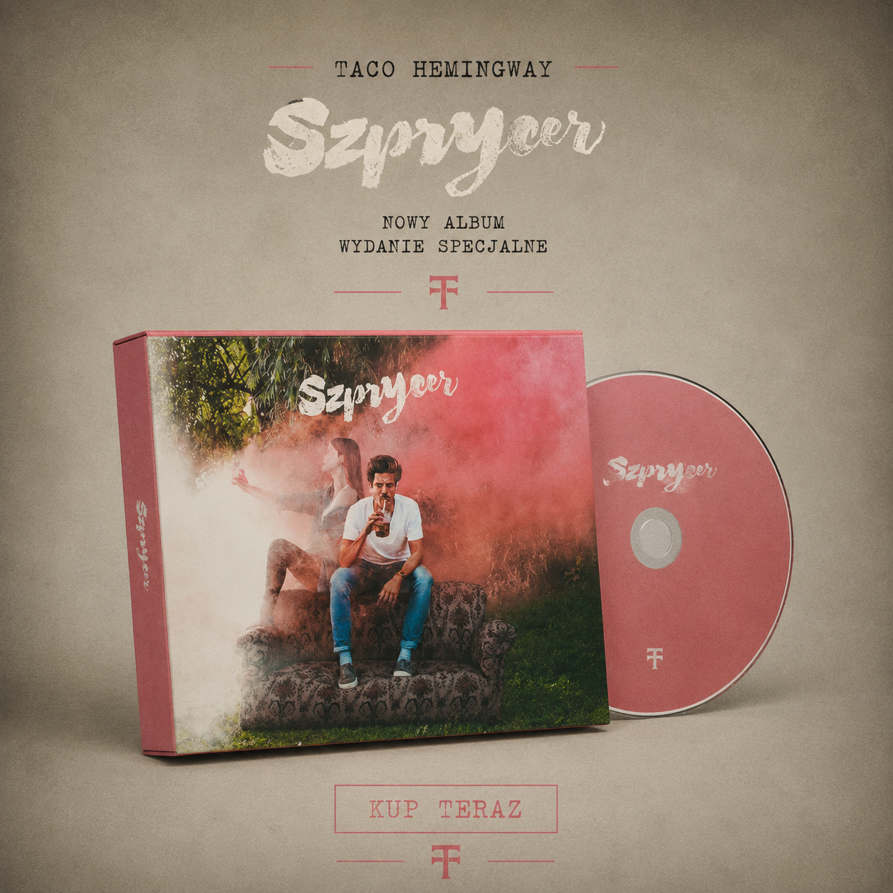

Polską sceną muzyczną wstrząsnęła informacja o zaginięciu jednego z najpopularniejszych artystów ostatniej dekady. Taco Hemingway miał zaginąć podczas wycieczki w Karkonoszach. Informację o jego zaginięciu przekazała jego partnerka - Iga Lis. Służby rozpoczęły szeroko rozwiniętą akcję poszukiwawczą, która przez wiele godzin nie przyniosła żadnych rezultatów.
Ostatnie zdjęcie Filipa Szcześniaka Źródło: Iga Lis
Taco Hemingway, a właściwie Filip Szcześniak, od lat pozostaje jedną z najważniejszych postaci polskiego hip-hopu. Swoją popularność zdobył dzięki charakterystycznemu stylowi, osobistym tekstom i umiejętności opowiadania historii, które trafiały zarówno do młodszych, jak i starszych słuchaczy. Na przestrzeni lat wydał wiele albumów i EP-ek, które regularnie zdobywały wysokie miejsca na listach sprzedaży. Jego twórczość niejednokrotnie wykraczała poza ramy klasycznego rapu, łącząc elementy muzyki alternatywnej, popu i elektroniki.
Ostatnie miesiące były dla artysty wyjątkowo udane. Zaledwie kilka miesięcy wcześniej zakończył swoją jedną z największych tras koncertowych, która przyciągnęła dziesiątki tysięcy fanów. Szczególnym wydarzeniem były dwa wyprzedane koncerty na Stadionie Narodowym w Warszawie w maju 2026 roku. Występy te uznawano za jedno z największych przedsięwzięć w historii polskiego rapu. Krytycy podkreślali imponującą oprawę wizualną, a publiczność entuzjastycznie przyjęła zarówno nowe utwory, jak i największe przeboje artysty.
Nic nie wskazywało na to, że kilka tygodni później media będą mówić o nim z zupełnie innego powodu.
Jak przekazała Iga Lis, para postanowiła spędzić kilka dni w Karkonoszach. Według jej relacji 6 sierpnia wybrali się na popularny szlak prowadzący na Śnieżkę. Pogoda miała być dobra, a wędrówka przebiegała bez problemów. Po osiągnięciu szczytu i krótkiej przerwie rozpoczęli zejście. W pewnym momencie, podczas marszu jedną z mniej uczęszczanych części trasy, miało dojść do sytuacji, która do dziś pozostaje niewyjaśniona.
Według partnerki muzyka Taco oddalił się na chwilę od szlaku. Początkowo nie wzbudziło to jej niepokoju, jednak gdy po kilku minutach nie wrócił, rozpoczęła poszukiwania na własną rękę. Po bezskutecznych próbach kontaktu telefonicznego zawiadomiła odpowiednie służby.
Ratownicy mieli rozpocząć akcję jeszcze tego samego dnia. W poszukiwaniach uczestniczyły dziesiątki osób, wykorzystano drony, psy tropiące oraz śmigłowiec pozwalający na przeszukiwanie trudno dostępnych terenów. Mimo wielu godzin działań nie odnaleziono jednak żadnych śladów mogących wyjaśnić zaginięcie rapera.
Według przekazanych informacji ostatni raz widziano go w rejonie karkonoskich szlaków prowadzących ze Śnieżki. Miał na sobie ciemną kurtkę przeciwdeszczową, szare spodnie trekkingowe i czarny plecak. Na głowie miał ciemną czapkę z daszkiem, a na nogach ciemne buty trekkingowe.
Na chwilę obecną los rapera pozostaje nieznany. Służby nie wykluczają żadnego scenariusza, jednak brak nowych śladów sprawia, że sprawa staje się coraz bardziej tajemnicza. Fani z całego kraju nadal mają nadzieję, że artysta odnajdzie się cały i zdrowy.
